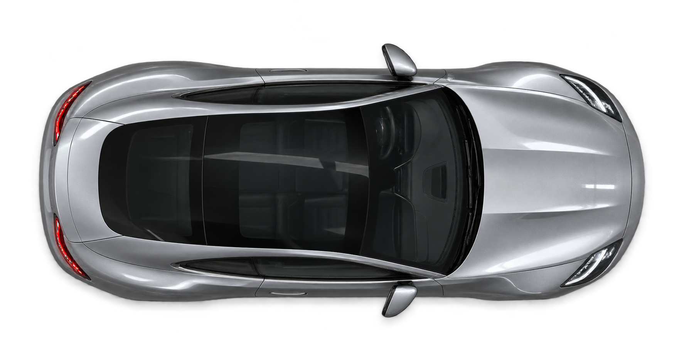

Осмотреть
Определить состояние лака и материалов.
Студия ухода за автомобилем
Полировка, керамика и защитная плёнка.
Сначала осмотр. Затем — точный план ухода.
Подберём процедуры под состояние покрытия.
Выберите точку на автомобиле

Одна из зон риска на трассе. Прозрачная плёнка помогает снизить риск сколов от мелких камней.
Определить состояние лака и материалов.
Обсудить объём, стоимость и сроки.
Подобрать уход после обработки.